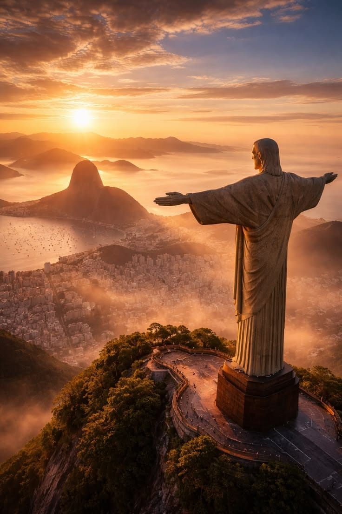
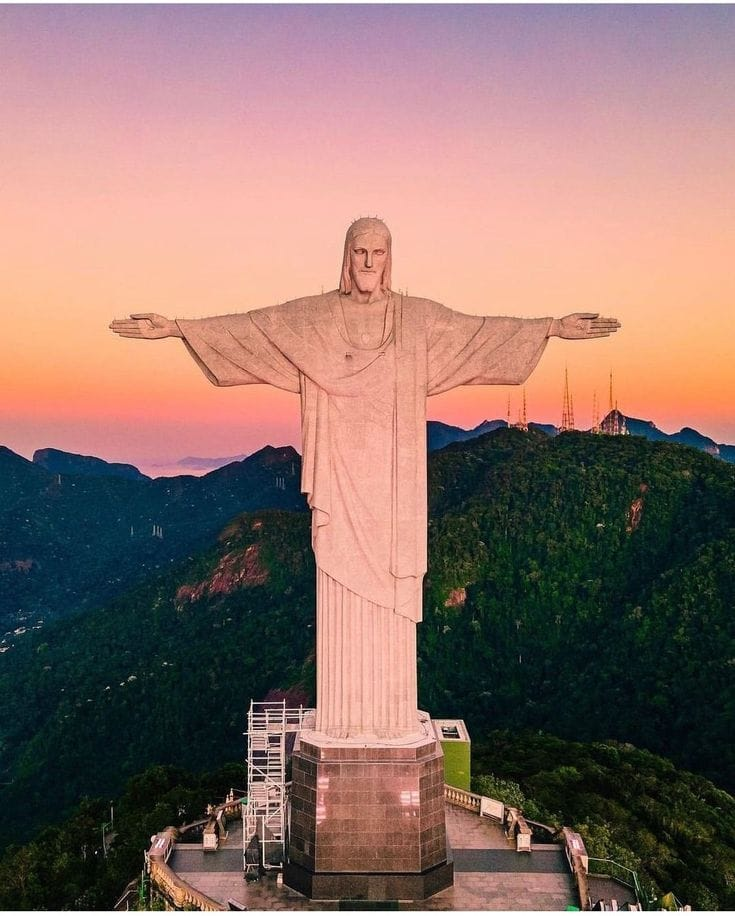
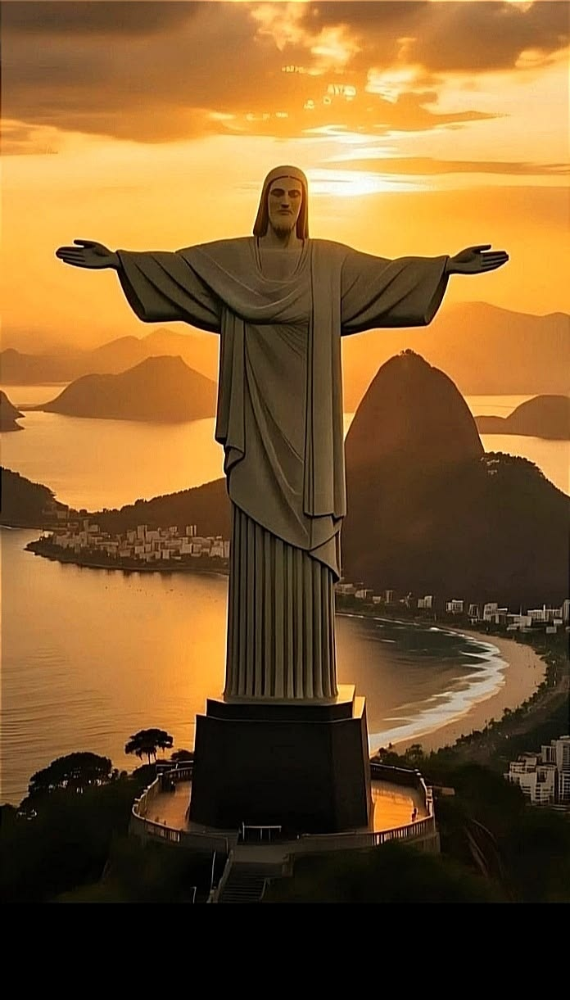

يُعتبر تمثال المسيح الفادى واحدًا من أشهر المعالم السياحية والدينية في العالم، ويقع فوق جبل كوركوفادو في مدينة ريو دي جانيرو بالبرازيل. تم افتتاح التمثال عام 1931، وأصبح منذ ذلك الوقت رمزًا للسلام والمحبة والترحيب، حيث يظهر المسيح فاتحًا ذراعيه وكأنه يحتضن المدينة بأكملها. يبلغ ارتفاع التمثال أكثر من ثلاثين مترًا، بالإضافة إلى القاعدة الضخمة التي يقف عليها، مما يجعله من أكبر التماثيل في العالم. صُمم التمثال باستخدام الخرسانة المسلحة والحجر الأملس، واستغرق بناؤه عدة سنوات، وشارك في تصميمه وتنفيذه مهندسون وفنانون من البرازيل وفرنسا. يتميز الموقع بإطلالة بانورامية مذهلة على مدينة ريو دي جانيرو والشواطئ والجبال المحيطة، مما يجعله وجهة سياحية عالمية يقصدها ملايين الزوار سنويًا. أُدرج تمثال المسيح الفادى ضمن عجائب الدنيا السبع الجديدة، ويُعد رمزًا ثقافيًا ودينيًا مهمًا للبرازيل وللعالم بأكمله.